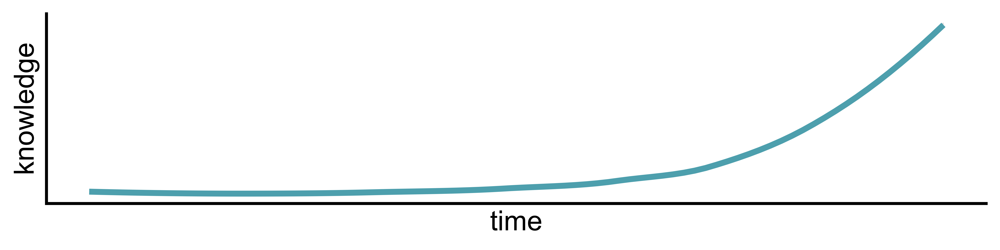
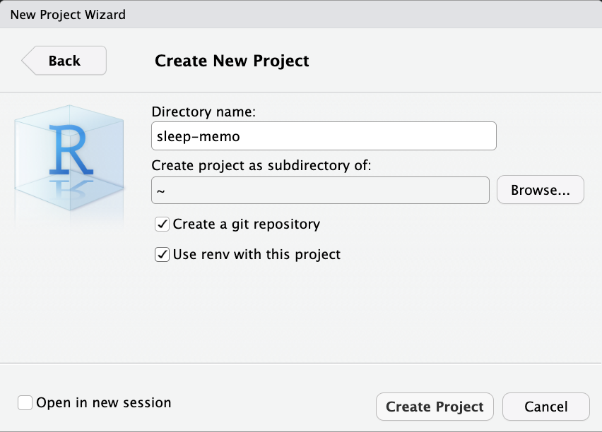
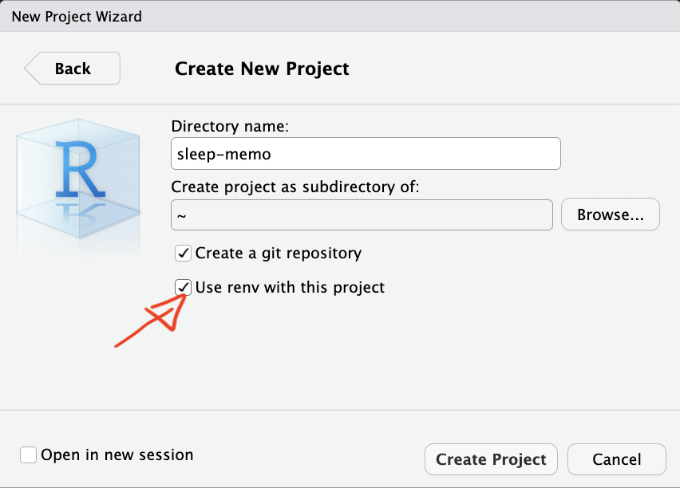
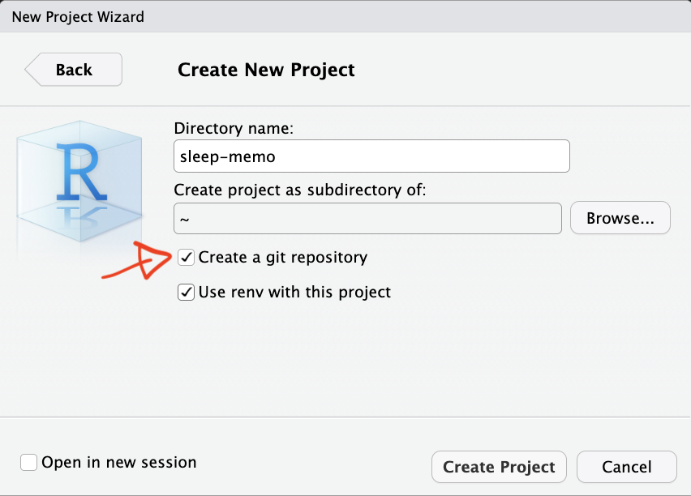

| x1 | x2 | x3 | x4 | x5 | x6 | x7 |
|---|---|---|---|---|---|---|
| 0.3981105 | 13.912435 | a | 0 | -0.6775811 | 0.8759740 | -0.2051604 |
| -0.1434733 | 1.093743 | c | 0 | 0.7055193 | 0.2521987 | 1.8816947 |
| -0.2526000 | 4.898035 | c | 0 | 0.4744651 | -0.5628840 | 0.3245589 |
| -1.2272588 | 14.717053 | b | 0 | -0.5132792 | -1.1368242 | -0.1355150 |
| -0.4360417 | 8.547025 | c | 1 | -0.1736804 | -0.7120962 | -1.2714320 |
Reproducible Science
Methodological School - 3 R’s of Trustworthy Science
Margherita Calderan
May 18, 2026
About me :)
- Post-doctoral researcher, University of Padova.
- Research: Bayesian hypothesis testing, computational modeling of cognitive and learning processes.
- Passion: Soccer and Reproducible science, driven by early struggles with messy datasets and a belief in transparent research!
Our job is hard
Running experiments
Analyzing data
Managing trainees
Writing papers
Responding to reviewers

Reproducibility helps!
Organizes your workflow.
Saves time by documenting steps.
Builds trust in your findings.
Enables others to reproduce and extend your work.
What is reproducible science?
Reproducibility can be considered as the most fundamental pre-requisite of replication in science.
“…obtaining consistent results using the same input data, computational steps, methods, and code, and conditions of analysis.” Reproducibility et al. (2019)
Meaning that someone else, or even you, in the future, can reproduce your results from your materials: your data, your code, your documentation.
Keys to reproducible science
- Data: organize, document, and share your datasets in ways that are usable by others and understandable by you (even years later).
- Code: write analysis scripts that are clean, transparent, and reusable.
- Literate programming: combine code and text in the same document, so your reports are dynamic and replicable.
- Version Control and Sharing: track changes, collaborate, and make your work openly available using tools like GitHub and OSF (and/or Zenodo).
So… Is reproducible science even harder?

Outline
1. Data
2. Code
3. R projects
4. Literate Programming
5. Version Control
Data
Data types in research
- Raw Data: Original, unprocessed (e.g., survey responses).
- Processed Data: Cleaned, digitized, or compressed.
- Analyzed Data: Summarized in tables, charts, or text.

Share all your data: where?
Why use dryad?
Flexible: Accepts any file format from any field.
Citable: Provides a persistent DOI.
Curated: Data curators check files for best practices.
Integrated: Streamlines sharing with publishers (Wiley, Royal Society, PLOS).
Why use zenodo?
Secure: Stored safely in CERN’s Data Centre.
Citable: Every upload gets a DOI.
Controlled Access: Can restrict access for sensitive data (e.g., clinical trials).
GitHub Integration: Easily preserve your GitHub repositories.
Why use osf?
Collaborative: Add collaborators and manage projects
Citable: Every file gets a unique URL for citing, project gets a DOI.
Comprehensive: Automate version control, preregister research, and share preprints.
Long-term: Guaranteed 50+ years of read access hosting
GitHub Integration: Easily preserve your GitHub repositories.
Bad data sharing example
Imagine this scenario: you read a paper that seems really relevant to your research. At the end, you’re excited to see they’ve shared their data on OSF. You go to the repository, and there’s one file…

Bad data sharing example
You download it, open it, and you see this…
What do these variables mean? What’s x3?
What do 0 and 1 represent?
How are missing values coded?
Is x6 a z-score or raw data?
Good data sharing practices
- Use plain-text formats (e.g.,
.csv,.txt). - Include a data dictionary with variable descriptions.
- Add a README with key details.
- Follow FAIR principles (Findable, Accessible, Interoperable, Reusable; Wilkinson et al. (2016), https://www.go-fair.org/fair-principles/)
FAIR data principles
- Findable: Use metadata and DOIs to make data easy to locate.
- Accessible: Ensure data is retrievable via open repositories.
- Interoperable: Use standard formats (e.g.,
.csv,.txt) for compatibility. - Reusable: Include clear documentation and open licenses.

Data dictionary
A data dictionary is a document that outlines the structure, content, and variable definitions for a dataset (harvard/datamanagement).
It is critical for reproducibility because it explains what all the variable names and values in your spreadsheet really mean (osf/datadictionary).
Data dictionary

From OSF guide
- Variable names
- Human-readable variable names
- Measurement units for the variable
- Allowed values for the variable
- Definition of the variable
Data dictionary: let’s try
Imagine we are collecting data (n = 12) to explore the relationship between anxiety (measured via the State-Trait Anxiety Inventory) and education levels:
Code
id anxi edu
1 a6 50 PhD
2 b5 59 PhD
3 c9 37 PhD
4 d3 46 PhD
5 e7 48 BSc
6 f6 44 BSc
7 g7 56 BSc
8 h4 54 BSc
9 i6 42 MSc
10 j4 48 MSc
11 k6 48 MSc
12 l4 37 MScSTAI-T consists of 20 items, 4-points likert scale
datadictionary
library(datadictionary)
descr <- list(
anxi = "Anxiety symptoms measured with the State-Trait Anxiety Inventory (state scale); 20 items summed on a 4-point Likert scale.",
edu = "Highest degree obtained, factor with three levels: PhD, BSc, MSc")
datdi <- create_dictionary(df, id_var = "id",
var_labels = descr)Data dictionary
| item | label | class | summary | value |
|---|---|---|---|---|
| Rows in dataset | 12 | |||
| Columns in dataset | 3 | |||
| id | Unique identifier | unique values | 12 | |
| missing | 0 | |||
| anxi | Anxiety symptoms measured with the State-Trait Anxiety Inventory (state scale); 20 items summed on a 4-point Likert scale. | integer | mean | 47 |
| median | 48 | |||
| min | 37 | |||
| max | 59 | |||
| missing | 0 | |||
| edu | Highest degree obtained, factor with three levels: PhD, BSc, MSc | factor | BSc (1) | 4 |
| MSc (2) | 4 | |||
| PhD (3) | 4 | |||
| missing | 0 |
Data dictionary - Good data sharing example

README
A README file is the first thing someone sees when they open your dataset (or project folder). It should answer basic questions like:
- What is this dataset?
- How was it collected?
- What are the variables?
- Which is the structure of the project?
README
Anxiety and Education Example Dataset
This repository contains a small simulated dataset with 12 observations, designed to explore the relationship between anxiety and education level.
Anxiety is measured using the State-Trait Anxiety Inventory (STAI), specifically the trait scale. Education level is recorded as the highest degree obtained (Bachelor, Master, PhD).
README - Good example

README - Good example

Data licensing
A license tells others what they can and can’t do with your data. If you don’t include one, legally speaking, people might not be allowed to use it, even if you meant to share it openly.
Data licensing
Common licenses for documents, data, and other non‑software:
Data licensing
Common licenses for software:
GNU GPL‑3.0: Applies to software and guarantees freedom to run, study, share, and modify software, requiring modified versions be distributed under the same license.
AGPL‑3.0: Extends the GNU GPL by requiring source code to be made available if a modified version runs on a publicly accessible server.
Exercise: Prepare your data‑sharing package
Before collecting data, good practice is to plan how you will document and share it.
Imagine you are designing the following study:
A research team wants to investigate whether daily screen time is associated with sleep quality in university students. They plan to recruit 200 participants and collect the following variables: average daily screen time, sleep duration, and age.
Your tasks:
- Data dictionary: you can use a
.csv, Excel file, R or create a table in word. - README: write a short text.
- License: choose a license for the dataset and justify your choice.
Code
Why scripting?
SPSS workflow:
Click menu items to run analysis
“exclude <18”
Click through everything again
Forget a step? Round differently?
Stressful, error-prone, and undocumented.
Why scripting?
R workflow:
One line change, rerun, and everything updates.
Why scripting?
Scripting ensures transparent and reproducible workflows.
Reproducible: You can rerun them.
Documented: You can see what you did and when.
Shareable: Others can inspect and reproduce your analysis.
 and RStudio
and RStudio
- R: Free, open-source, with thousands of packages for analysis.
- RStudio: Intuitive interface for coding, plotting, and debugging.
- Vibrant community for support and resources.
Writing better code
- Name descriptively: Use
snake_caseorcamelCasefor readability. - Comment clearly: Document your logic for clarity.
- Organize scripts: Load packages and data upfront.
Use descriptive names
Organized scripts
Global operations at the beginning of the script:
- loading packages
- changing general options (
options()) - loading datasets
Functions to avoid repetition
Functions are the primary building blocks of your program. You write small, reusable, self-contained functions that do one thing well, and then you combine them.
Avoid repeating the same operation multiple times in the script. The rule is, if you are doing the same operation more than two times, write a function.
A function can be re-used, tested and changed just one time affecting the whole project.
Functional programming, example…
We have a dataset (mtcars) and we want to calculate the mean, median, standard deviation, minimum and maximum of each column and store the result in a table.
mpg cyl disp hp drat wt qsec vs am gear carb
Mazda RX4 21.0 6 160 110 3.90 2.620 16.46 0 1 4 4
Mazda RX4 Wag 21.0 6 160 110 3.90 2.875 17.02 0 1 4 4
Datsun 710 22.8 4 108 93 3.85 2.320 18.61 1 1 4 1'data.frame': 32 obs. of 11 variables:
$ mpg : num 21 21 22.8 21.4 18.7 18.1 14.3 24.4 22.8 19.2 ...
$ cyl : num 6 6 4 6 8 6 8 4 4 6 ...
$ disp: num 160 160 108 258 360 ...
$ hp : num 110 110 93 110 175 105 245 62 95 123 ...
$ drat: num 3.9 3.9 3.85 3.08 3.15 2.76 3.21 3.69 3.92 3.92 ...
$ wt : num 2.62 2.88 2.32 3.21 3.44 ...
$ qsec: num 16.5 17 18.6 19.4 17 ...
$ vs : num 0 0 1 1 0 1 0 1 1 1 ...
$ am : num 1 1 1 0 0 0 0 0 0 0 ...
$ gear: num 4 4 4 3 3 3 3 4 4 4 ...
$ carb: num 4 4 1 1 2 1 4 2 2 4 ...Imperative programming
The standard (~imperative) option is using a for loop, iterating through columns, calculate the values and store into another data structure.
ncols <- ncol(mtcars) # number of columns
# create vectors of length ncols with 0s
means <- medians <- mins <- maxs <- rep(0, ncols)
# loop over the columns (variables) and fill the vectors
for(i in 1:ncols){
means[i] <- mean(mtcars[[i]])
medians[i] <- median(mtcars[[i]])
mins[i] <- min(mtcars[[i]])
maxs[i] <- max(mtcars[[i]])
}Functional programming
The main idea is to decompose the problem writing a function and loop over the columns of the dataframe:
summ <- function(x){
data.frame(means = mean(x), #given an input compute stats
medians = median(x),
mins = min(x),
maxs = max(x))
} # return a df
ncols <- ncol(mtcars) #number of columns
dfs <- vector(mode = "list", length = ncols) #empty list
for(i in 1:ncols){
dfs[[i]] <- summ(mtcars[[i]])
#each element of the list is a df with the summary stat
}Functional programming
Functional programming, *apply 📦
The
*applyfamily is one of the best tool in R. The idea is pretty simple: apply a function to each element of a list.The powerful side is that in R everything can be considered as a list. A vector is a list of single elements, a dataframe is a list of columns etc.
Internally, R is still using a
forloop but the verbose part (preallocation, choosing the iterator, indexing) is encapsulated into the*applyfunction.
The *apply family
Apply your function…
Now results is a list of data frames, one per column.
We can stack them into one big data frame:
Using sapply, vapply, and apply
lapply()always returns a list.sapply()tries to simplify the result into a vector or matrix.vapply()is likesapply()but safer (you specify the return type).apply()is for applying functions over rows or columns of a matrix or data frame.
for loops are bad?
for loops are the core of each operation in R (and in every programming language). For complex operation they are more readable and effective compared to *apply. In R we need extra care for writing efficent for loops.
Extremely slow, no preallocation:
Very fast:
microbenchmark 📦
library(microbenchmark)
microbenchmark(
grow_in_loop = {
res <- c()
for (i in 1:10000) {
res[i] <- i^2
}
},
preallocated = {
res <- rep(0, 10000)
for (i in 1:length(res)) {
res[i] <- i^2
}
}, times = 100)[1:2,1:2]Unit: microseconds
expr min lq mean median uq max neval
grow_in_loop 1330.040 1330.040 1330.040 1330.040 1330.040 1330.040 1
preallocated 916.637 916.637 916.637 916.637 916.637 916.637 1Going further: custom function lists
Let’s define a list of functions:
Now we can apply all of these to every column:
mean sd min max median
mpg 20.090625 6.0269481 10.400 33.900 19.200
cyl 6.187500 1.7859216 4.000 8.000 6.000
disp 230.721875 123.9386938 71.100 472.000 196.300
hp 146.687500 68.5628685 52.000 335.000 123.000
drat 3.596563 0.5346787 2.760 4.930 3.695
wt 3.217250 0.9784574 1.513 5.424 3.325
qsec 17.848750 1.7869432 14.500 22.900 17.710
vs 0.437500 0.5040161 0.000 1.000 0.000
am 0.406250 0.4989909 0.000 1.000 0.000
gear 3.687500 0.7378041 3.000 5.000 4.000
carb 2.812500 1.6152000 1.000 8.000 2.000This gives you a matrix with rows as variables and columns as statistics.
Test your functions - fuzzr 📦
When you write your own functions, it’s smart to test them. In R, we can use fuzzr to do property-based testing.
Define your function…
This runs the property on different random numeric vectors and checks whether it holds.
Why functional programming?
We can write less and reusable code that can be shared and used in multiple projects.
The scripts are more compact, easy to modify and less error prone (imagine that you want to improve the
summfunction, you only need to change it once instead of touching theforloop).Functions can be easily and consistently documented (see roxygen documentation) improving the reproducibility and readability of your code.
Import your functions
You can write some R scripts only with functions and source() them into the global environment.
project/
│
├─ R/
│ │
│ ├─ utils.R
│
├─ analysis.R
More about functional programming in R
Advanced R by Hadley Wickham, section on Functional Programming (https://adv-r.hadley.nz/fp.html)
Hands-On Programming with R by Garrett Grolemund https://rstudio-education.github.io/hopr/
Hadley Wickham: The Joy of Functional Programming (for Data Science)(https://www.youtube.com/watch?v=bzUmK0Y07ck)
Wrapping up
- Avoid repetition by using functions.
- Test your functions.
- The
*applyfunctions are your friends, or*mapfrompurrr📦
Organize your project
R Projects
R Projects are a feature implemented in RStudio to organize a working directory.
- They automatically set the working directory
- They allow the use of relative paths instead of absolute paths
- They provide quick access to a specific project
The working directory problem
How many times have you opened an R script and seen this at the top?
Instead of hardcoding paths, we want to use projects with relative paths.
R Projects
An R Project (.Rproj) is a file that defines a self-contained workspace.
When you open an R Project, your working directory is automatically set to the project root, no need to use setwd() ever again.
Open RStudio
File → New Project → New Directory → New Project

Relative Path (to the working directory)
Users
|
├─tita
|
├─ sleep-memo
|
├─ data
| ├─ raw.csv
|
├─ sleep-memo.RprojAbsolute path:
Relative path:
A minimal project structure
my-project/
│
├── data/
│ ├── raw/
│ └── processed/
├── R/
│ └── analysis.R
│
├── outputs/
│ ├── figures/
│ └── tables/
│
├── my-project.Rproj
│
└── README.mdProject organization with rrtools 📦
To make this even “easier”, you can use the rrtools package to create what’s called a reproducible research compendium.
… the goal is to provide a standard and easily recognisable way for organising the digital materials of a project to enable others to inspect, reproduce, and extend the research… (Marwick, Boettiger, and Mullen 2018)

Research compendium rrtools 📦
- Organize its files according to the prevailing conventions.
- Maintain a clear separation of data (original data is untouched!), method, and output.
- Specify the computational environment that was used for the original analysis
rrtools::create_compendium("compedium") builds the basic structure for a research compendium.
renv📦 : locking your R environment
Another challenge for reproducibility is package versions.
You write some code today using dplyr 1.1.2.
In six months, dplyr gets updated… 😢
renv helps you create reproducible environments for your R projects!
What does renv do?
It records all the packages you use, with versions, in a lockfile
It installs them in a project-specific library
It ensures that anyone who runs your code gets exactly the same environment
Project specific library
renv commands

renv::restore() # re-install from lockfile

Research rrtools + renv 💣
rrtools: Organizes your project into a reproducible compendium with clear folders.renv: Locks R package versions for consistent environments.- Together, they ensure structure and reproducibility across teams and time.
- Run
rrtools::create_compendium("project")to start, thenrenv::init()to lock dependencies.
 Docker
Docker

- Packages your project’s software, dependencies, and system settings into a container.
- Ensures consistency across different computers or servers.
- Ideal for sharing complex analyses with others.
Documenting your environment ℹ️
sessionInfo(): Captures your R version, packages, and platform in one command.- Easy way to document and share your environment.
R version 4.4.2 (2024-10-31)
Platform: aarch64-apple-darwin20
Running under: macOS Sequoia 15.6.1
Matrix products: default
BLAS: /Library/Frameworks/R.framework/Versions/4.4-arm64/Resources/lib/libRblas.0.dylib
LAPACK: /Library/Frameworks/R.framework/Versions/4.4-arm64/Resources/lib/libRlapack.dylib; LAPACK version 3.12.0
locale:
[1] en_US.UTF-8/en_US.UTF-8/en_US.UTF-8/C/en_US.UTF-8/en_US.UTF-8
time zone: Europe/Rome
tzcode source: internal
attached base packages:
[1] stats graphics grDevices utils datasets methods base
other attached packages:
[1] fuzzr_0.2.2 microbenchmark_1.5.0 datadictionary_1.0.1
[4] patchwork_1.3.2 ggplot2_4.0.2
loaded via a namespace (and not attached):
[1] gt_1.0.0 sandwich_3.1-1 tidyr_1.3.2 sass_0.4.10
[5] generics_0.1.4 xml2_1.3.8 stringi_1.8.7 lattice_0.22-6
[9] hms_1.1.4 digest_0.6.39 magrittr_2.0.4 evaluate_1.0.5
[13] grid_4.4.2 timechange_0.4.0 RColorBrewer_1.1-3 mvtnorm_1.3-3
[17] fastmap_1.2.0 cellranger_1.1.0 jsonlite_2.0.0 Matrix_1.7-2
[21] zip_2.3.3 survival_3.8-3 multcomp_1.4-29 mgcv_1.9-1
[25] purrr_1.2.1 scales_1.4.0 TH.data_1.1-3 codetools_0.2-20
[29] cli_3.6.5 labelled_2.16.0 rlang_1.1.7 splines_4.4.2
[33] withr_3.0.2 yaml_2.3.12 otel_0.2.0 tools_4.4.2
[37] dplyr_1.2.0 forcats_1.0.1 assertthat_0.2.1 vctrs_0.7.1
[41] R6_2.6.1 zoo_1.8-12 lifecycle_1.0.5 lubridate_1.9.5
[45] MASS_7.3-64 pkgconfig_2.0.3 pillar_1.11.1 openxlsx_4.2.8
[49] gtable_0.3.6 glue_1.8.0 Rcpp_1.1.1 haven_2.5.4
[53] xfun_0.56 tibble_3.3.1 tidyselect_1.2.1 rstudioapi_0.18.0
[57] knitr_1.51.2 farver_2.1.2 htmltools_0.5.9 nlme_3.1-167
[61] rmarkdown_2.30 labeling_0.4.3 compiler_4.4.2 S7_0.2.1
[65] chron_2.3-62 readxl_1.4.3 Organizing for reproducibility
- Don’t hardcode paths, use
R Projects - Create a logical folder structure for your project
- Use
rrtoolsto scaffold a research compendium - Use
renvto lock your package versions
Literate Programming
What’s wrong about Microsoft Word?
In MS Word (or similar) we need to produce everything outside and then manually put figures and tables.
- writing math formulas
- reporting statistics in the text
- producing tables
- producing plots

Think about the typical MW workflow
- You run your analysis in R
- You copy the results into a Word document
- You tweak the formatting
- You insert a figure generated with R manually
- You change your analysis, but forget to update the results in the text…
Literate Programming
A document where:
- The code is part of the text
- The results are generated dynamically
- The figures are rendered automatically
- Everything is in sync
For example jupyter notebooks, R Markdown and now Quarto are literate programming frameworks to integrate code and text.
Literate Programming, the markup language
The markup language is the core element of a literate programming framework. When you write in a markup language, you’re writing plain text while also giving instructions for how to generate the final result.
- LaTeX
- HTML
- Markdown
- …
LaTeX

Markdown
Markdown
Markdown is one of the most popular markup languages for several reasons:
- easy to write and read compared to Latex and HTML
- easy to convert from Markdown to basically every other format using
pandoc
Quarto
Quarto (https://quarto.org/) is the evolution of R Markdown that integrate a programming language with the Markdown markup language. It is very simple but quite powerful.


Basic Markdown
Markdown can be learned in minutes. You can go to the following link https://quarto.org/docs/authoring/markdown-basics.html and try to understand the syntax.
Quarto
You write your documents in Markdown, and Quarto turns them into:
- HTML reports
- PDF articles
- Word documents
- Slides
- Website
- Academic manuscripts
- …
Quarto
- If your data changes, your summary table updates.
- If you update your model, your coefficients update.
- If you change a plot’s colors, the new version appear, without having to re-export and re-insert anything.
This eliminates a huge source of human error: manual updates.
Outputs
Quarto can generate multiple output formats from the same source file.
- A PDF to send to your colleagues
- A Word document for your co-author who hates PDFs
- An HTML report for your own website
Everything from the same source. No duplication. Synchronization.
Extra Tools: citations and cross-referencing
- Citations with BibTeX or Zotero
- Cross-references for figures and tables
- Numbered equations with LaTeX syntax
- Footnotes, tables of contents, and more
You can write scientific documents that look and behave just like journal articles, without ever opening Word.
Writing Papers - APA quarto
APA Quarto is a Quarto extension that makes it easy to write documents in APA 7th edition style, with automatic formatting for title pages, headings, citations, references, tables, and figures.

Let’s see an example…
Quarto + Zotero 


Choose your reference: 

More about Quarto and R Markdown
The topic is extremely vast. You can do everything in Quarto, a website, thesis, your CV, etc.
- Yihui Xie - R Markdown Cookbook https://bookdown.org/yihui/rmarkdown-cookbook/
- Yihui Xie - R Markdown: The Definitive Guide https://bookdown.org/yihui/rmarkdown/
- Quarto documentation https://quarto.org/docs/guide/
Version Control
Why version control?
You’re working on a project. You save your script as:
analysis.Ranalysis2.Ranalysis_final.Ranalysis_final_revised.Ranalysis_final_revised_OK_for_real.R
No way to know what changed, when, or why — and no safe way to go back.
What is Git?
Git is a version control system: it tracks every change you make to your files, so you can always go back to a previous state.
You save progress by making commits: each one is a labeled snapshot of your project.
Each commit records: - The changed files - The exact changes - The time - A message describing what you did
Commit message ✍️
A commit message tells your future self (and collaborators) what you did and why.
- Write meaningful messages:
- ✅
"Fix bug in anxiety scoring function" - ❌
"stuff" - Use the imperative mood:
"Add README","Update plots"
 GitHub
GitHub

Git tracks your project on your computer. GitHub is the online platform where you can:
- Back up your project safely in the cloud
- Share it publicly or privately with others
- Collaborate without overwriting each other’s work
- Track issues and project progress
Git workflow
Files move through three local stages before reaching GitHub:
📁
Working Directory
Edit files here
git add→
📋
Staging Area
Choose what to commit
git commit→
💾
Local Repository
Snapshot saved locally
git push →←
git pull☁️
GitHub
Shared online
Remember:
New files are untracked until you run git add.
GitHub in practice
git init # turn folder into a repo
git add analysis.R # stage file for commit
git commit -m "Initial commit" # save a snapshot locally
git remote add origin <URL> # link to a GitHub repo
git push -u origin main # first push (sets upstream)
git push # all subsequent pushes
git pull # download others' commitsYou can also do most of this from RStudio’s Git pane.
Branching & merging 🌱
By default, you work on the main branch. A new branch is an independent copy of your project where you can experiment safely — without touching the working version.
- Try out new features without breaking
main - Fix bugs in isolation
- Let multiple people work in parallel
When the work is ready, you merge it back into main.
Branching in practice
GitHub + RStudio Integration
You don’t have to use the terminal, RStudio has a built-in Git panel, you can:
Clone a repo:
File → New Project → Version ControlStage, commit, push, pull: use the Git tab
Browse history: click History in the Git tab
New project with Git: tick “Create a git repository” at setup

Practice & resources
- Happy Git and GitHub for the useR
- GitHub Education: https://education.github.com
- Try GitHub Desktop (GUI client)
Start small. Use Git for one script. Then grow your skills from there.
If Git and GitHub feel too technical, or if your collaborators are less technical, the OSF is a fantastic alternative or complement.
- Upload data, code, and documents
- Create public or private projects
- Add collaborators
- Create preregistrations
- Generate DOIs for citation
- Track changes
You can also connect OSF to GitHub.
Integrated workflow 🛠️
- Develop your analysis using R and Quarto.
- Track code and scripts using Git.
- Host your code on GitHub (public or private).
- Upload your data and materials to OSF, including a data dictionary.
- Link your GitHub repository to your OSF project.
- Use
renvfor reproducible R environments.
- Share the OSF project and cite it in your paper.

Reproducibility
It’s about credibility and transparency.
Reproducible science is not about being perfect.
It’s about showing your work so that others can follow, understand, and build upon it.
Start simple, don’t wait until you’re “ready”, and teach what you learn!
THANK YOU!
References
Marwick, Ben, Carl Boettiger, and Lincoln Mullen. 2018. “Packaging Data Analytical Work Reproducibly Using r (and Friends).” The American Statistician 72 (1): 80–88. https://doi.org/10.1080/00031305.2017.1375986.
Reproducibility, Committee on, Replicability in Science, Board on Behavioral, Cognitive, and Sensory Sciences, Committee on National Statistics, Division of Behavioral, Social Sciences, Education, et al. 2019. Reproducibility and Replicability in Science. Washington, D.C.: National Academies Press. https://doi.org/10.17226/25303.
Wilkinson, Mark D., Michel Dumontier, IJsbrand Jan Aalbersberg, Gabrielle Appleton, Myles Axton, Arie Baak, Niklas Blomberg, et al. 2016. “The FAIR Guiding Principles for Scientific Data Management and Stewardship.” Scientific Data 3 (1): 160018. https://doi.org/10.1038/sdata.2016.18.
Comments, comments and comments…
Write the code for your future self and for others, not for yourself right now.
Try to open a (not well documented) old code after a couple of years and you will understand :)